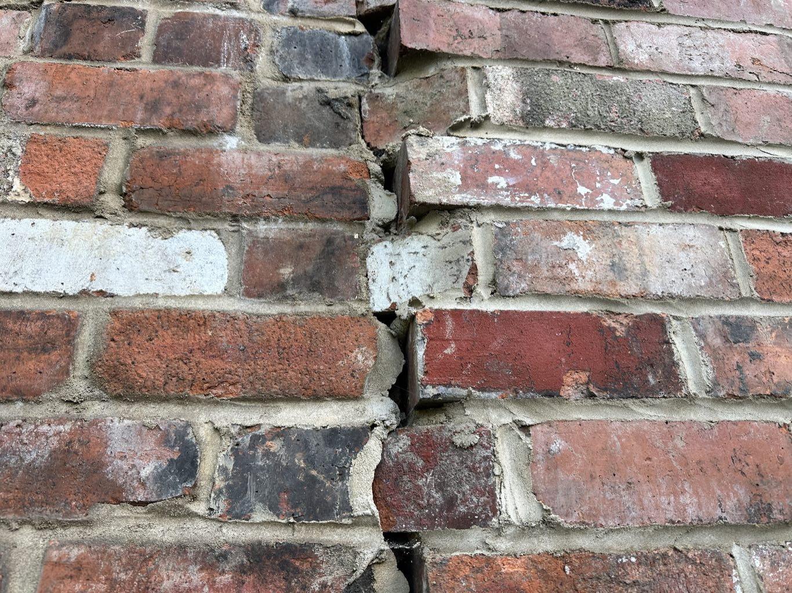

A plain-English guide to the Party Wall etc. Act 1996 — the notices, the timescales, your responsibilities, and the pitfalls that catch owners out. Written by Chartered Building Surveyors.
The Act gives both sides rights and duties. Pick the route that fits your situation — you can read the other side too.
You're the Building Owner — extending, converting a loft, underpinning, or digging near next door. You serve the notices.
See the building owner processYou're the Adjoining Owner — your neighbour's works could affect your property. The Act protects you, at no cost to you.
See the adjoining owner processFormal written notice is required before any notifiable work begins. The type depends on what you're planning to do.
For work directly to a wall or structure shared with your neighbour:
Required when excavating near a neighbour's foundations. Two trigger distances:
For building a new wall at or astride the boundary line:
The step-by-step route for owners planning notifiable works — from first checks through to completion.
Not all building work triggers the Act. Confirm whether yours does before anything else.
If in doubt, get preliminary advice. Getting this wrong is expensive to unwind.
Notices stand or fall on the drawings behind them. Settle the design — and the structural detail — before you serve anything.
Instruct the structural engineer alongside the architect. Without the foundation detail, a valid Section 6 notice cannot be drafted — and this is one of the commonest causes of delay.
A surveyor confirms which notices apply, prepares them correctly, and steers the timescales.
The Building Owner normally bears the reasonable costs of the Adjoining Owner's surveyor — a statutory point under Section 10 of the Act.
Formal written notice goes to every affected adjoining owner, with the prescribed information.
A notice stays valid for 12 months from its stated start date. After that, you must serve afresh.
The Adjoining Owner has 14 days to respond. Three outcomes are possible — consent, dissent, or silence.
You cannot start notifiable works until you have written consent, or an Award has been made and served.
If a dispute arises, the surveyors prepare an Award governing how the works are carried out. A Schedule of Condition records the adjoining property first.
Either party has 14 days from service to appeal to the County Court. Once that passes, the Award is binding and works can begin — strictly in line with it.
How the Adjoining Owner responds within the window decides which way the process turns.
The neighbour wants safeguards. A dispute is deemed to arise. Each side appoints a surveyor, or both agree a single Agreed Surveyor, who prepare the Award.
Silence counts as a deemed dispute — but you can't appoint for them straight away. The Building Owner must first serve a written request giving a further 10 days to appoint a surveyor. Only if they still don't can a surveyor be appointed on their behalf (Section 10(4)).
Received a notice? Here's what it means and what to do. Your property is protected, normally at no cost to you.
It should name the Building Owner, describe the works, reference the right section, and give a proposed start date.
If anything is unclear, take advice before you respond.
Consent and the works proceed without an Award. Dissent and the surveyor process begins. Dissenting is common — and sensible.
Dissenting does not stop the works. It puts proper safeguards in place.
Appoint promptly. If you don't, the Building Owner can appoint one on your behalf under Section 10(4).
Cost: the Building Owner normally meets the reasonable fees of your surveyor. You shouldn't usually pay anything.
Once agreed, the Award is served on both sides. You have 14 days to appeal to the County Court if you disagree with its terms.
If damage occurs, the Schedule of Condition is your baseline evidence for a claim.
The mistakes that cost owners time and money — drawn from what we see on real jobs. Read these before you serve anything.
Few disputes are really about the building work. Far more often, the project stalls because the notice was served too early, on incomplete drawings, with no idea where the boundary runs — or because nobody allowed for the statutory clock. Every one of these is avoidable. Here are the nine we see most.

Owners often assume they — or their builder — can simply step next door to put up scaffold, render the new flank wall, or dig. You can't. Going onto a neighbour's land without permission or a legal right is trespass.
Planning and party wall are entirely separate.
Planning decides whether you can build. The Party Wall Act governs how the works affect your neighbour. Starting notifiable works without an agreement is a breach — your neighbour can get a court injunction to stop you within days, plus costs.
The periods are fixed — they can't be shortened.
Two months for a Party Structure notice, one month for line-of-junction or excavation, a 14-day response window, then 4–8 weeks to agree an Award if there's a dispute. None of it can be rushed, however urgent the build.
A vague notice is an invalid notice.
Drawings must be to scale and show existing and proposed conditions; excavation needs cross-sections showing depth against the neighbour's foundations. Serve on sketches and the notice gets challenged — and if the design then changes, the notice falls away and the clock resets.
No detail means no valid notice.
If the structural engineer isn't instructed early, there's no foundation design, no excavation depths and no temporary-works detail. A Section 6 notice can't be drafted without it — and structural design itself takes weeks.
The title plan shows general boundaries, not the exact line.
Many owners don't know precisely where the boundary runs, which wall or fence they own, or what they're responsible for. You can't serve the right notice — on the right people — if you don't know that.
If the line isn't drawn, nobody can assess it.
Plans that don't show the boundary make it impossible to see what's built up to it, astride it, or how close excavation comes. The result is queries, back-and-forth and lost weeks.
Plan for dissent as the default.
Even reasonable neighbours often dissent — usually to secure a Schedule of Condition and enforceable terms, which is sensible, not hostile. A dissent (or silence) triggers surveyors and an Award: weeks you didn't budget for.
There's no automatic right of access — see the red panel above.
Scaffolding over the boundary, rendering the new wall, or digging from the neighbour's side all need a legal right. Section 8 access only exists once an Award is in place; the 1992 Act only covers preservation works.
A notice landing cold rarely lands well.
Serving a formal notice with no word beforehand puts even reasonable neighbours on the back foot. A short, early conversation — showing you've thought about how the works affect them — protects the relationship. Skip it and you can turn a willing neighbour into an aggrieved one, or a neutral one into a hostile one.
Straight answers to the questions we hear most — on process, costs, access and your rights.
Tick each item as you go. Your progress is saved on this device.
The legislation itself, the official guidance, and trusted help on boundaries and access. All open in a new tab.
The government's plain-English guide, with example notices you can adapt.
gov.ukHow boundaries are recorded, and how to make a boundary agreement with a neighbour.
gov.ukHM Land Registry explains why title plans show general — not exact — boundaries.
HM Land RegistryRICS-regulated Chartered Building Surveyors, Sheffield. Party wall advice for both sides.
informsurveying.co.ukThe leading body for party wall practitioners — find a specialist surveyor near you.
pyramusandthisbesociety.org.ukSearch the Royal Institution of Chartered Surveyors' official register of regulated firms.
ricsfirms.comWhether you're planning works or you've received a notice, our Chartered Surveyors will guide you through it — clearly, and on time.